Spălare exterior
Spălare manuală cu grijă la caroserie, jante și cauciucuri, uscare și finisare — mașina iese lună, fără urme.
Spălătorie auto & bar · Arad
Spălare exterior și interior sub copertine, cu grijă la fiecare detaliu — de la un Logan la un Defender. Iar cât lucrăm noi, tu bei o cafea la bar. Drive clean.
Cine suntem
Suntem Spălătoria David — pe str. Petru Rareș nr. 98, în cartierul Grădiște din Arad. Facem asta din 2005, iar de atunci au trecut prin curtea noastră mii de mașini, de la citadine la SUV-uri și mașini premium.
Lucrăm sub copertine acoperite, pe orice vreme, cu produse profesionale de detailing. Iar pentru că timpul tău contează, ți-am pus și un bar la dispoziție: stai la o cafea proaspătă cât îți pregătim mașina.
„Ozonul distruge, nu maschează. Drive clean!”
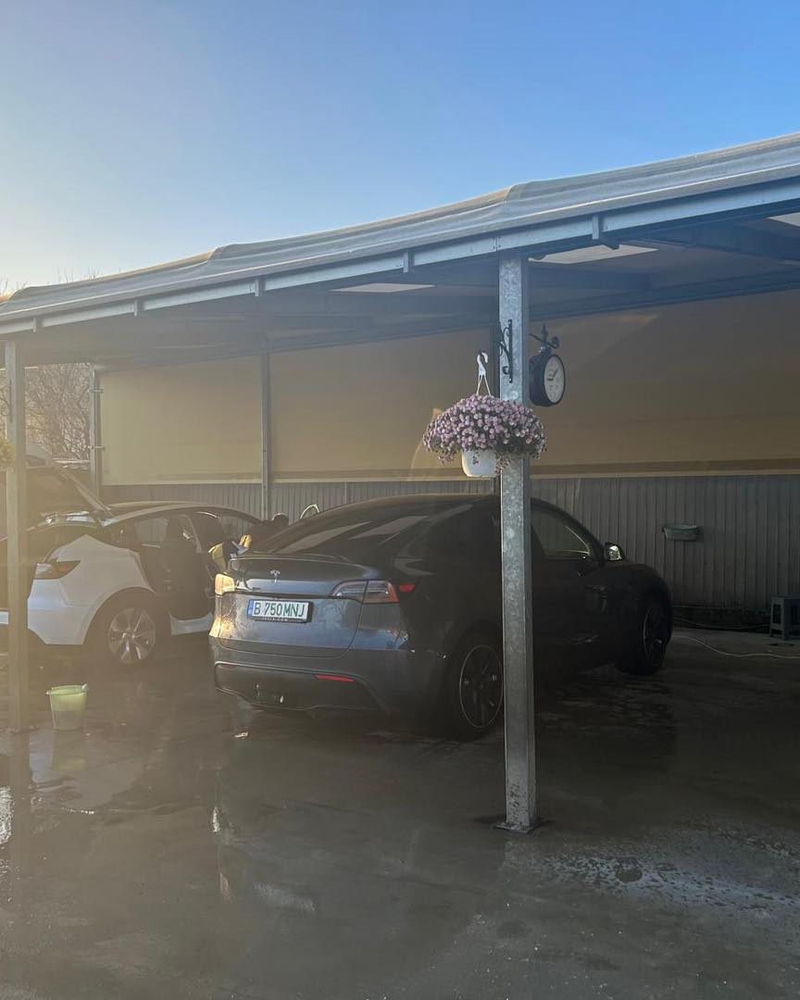
Servicii
Spălare completă și îngrijire auto, sub copertine acoperite. Pentru prețuri și programări, sună-ne — îți spunem pe loc.
Spălare manuală cu grijă la caroserie, jante și cauciucuri, uscare și finisare — mașina iese lună, fără urme.
Aspirare, ștergere bord și plastice, curățare geamuri. Interiorul revine curat și primenit.
Exterior + interior, totul deodată — soluția clasică pentru o mașină curată din față până în spate.
Cel mai cerutIgienizare cu generator de ozon: elimină mirosurile și bacteriile din habitaclu și din instalația de climatizare.
100% ecologicCât îți pregătim mașina, tu stai la o cafea proaspătă. Spălătorie și bar, sub același acoperiș.
Lucrăm cu produse profesionale (partener Detailing Geek) pentru un finisaj de care ești mândru.
💧 Spălătorie auto & bar din 2005 — pe orice vreme, sub copertine acoperite. Sună la 0783 976 225 pentru prețuri și disponibilitate.
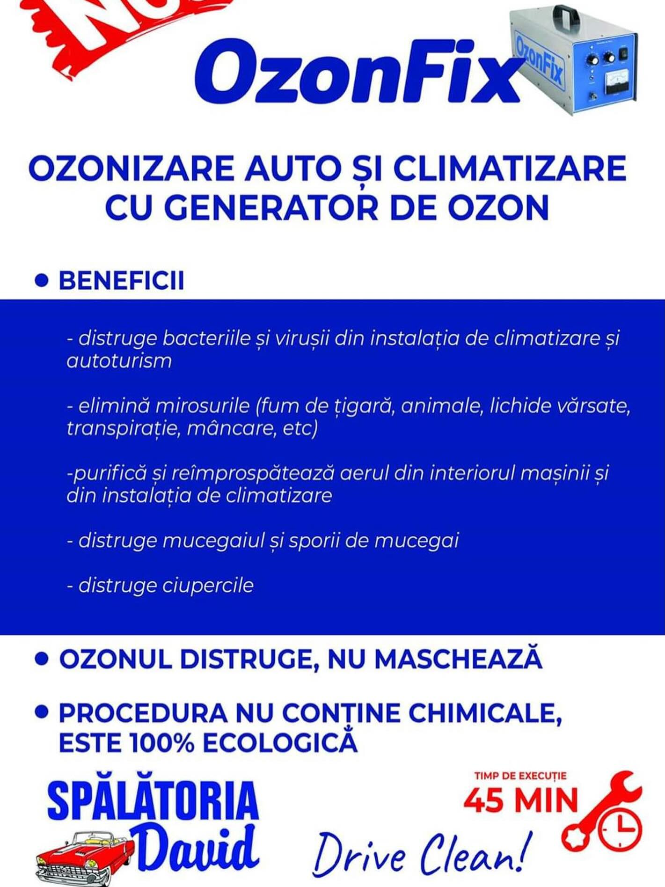
Ozonizare auto
Ozonizăm habitaclul și instalația de climatizare cu un generator de ozon. Procedura este 100% ecologică și nu folosește substanțe chimice — ozonul distruge sursa mirosului, nu doar îl maschează.
Galerie
Fotografii reale de la Spălătoria David. Mai multe pe pagina noastră de Facebook.
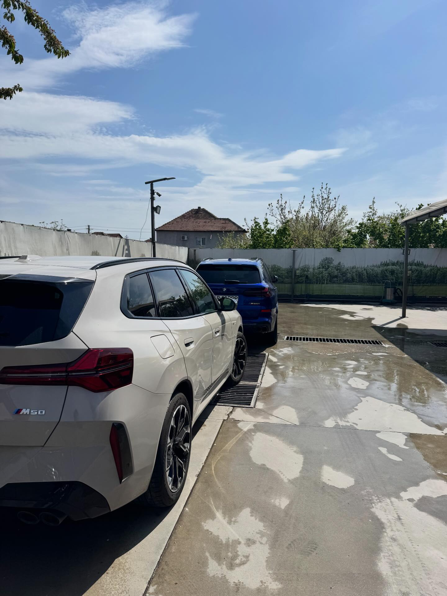
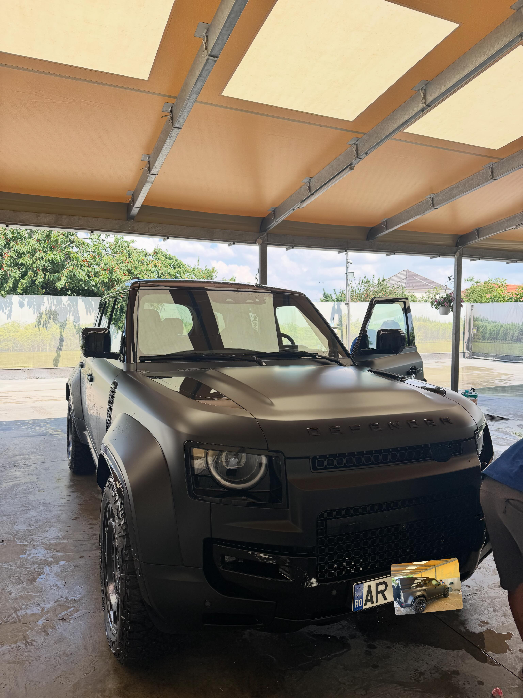
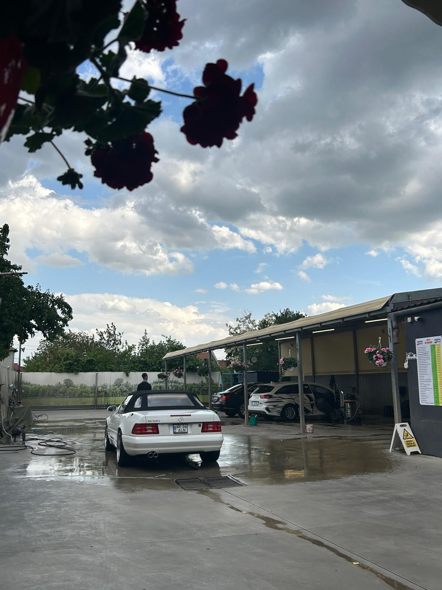
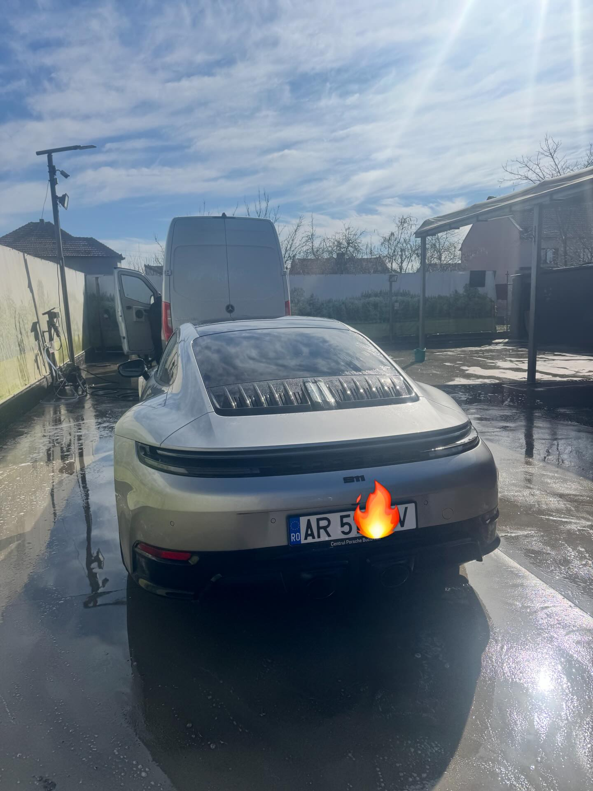
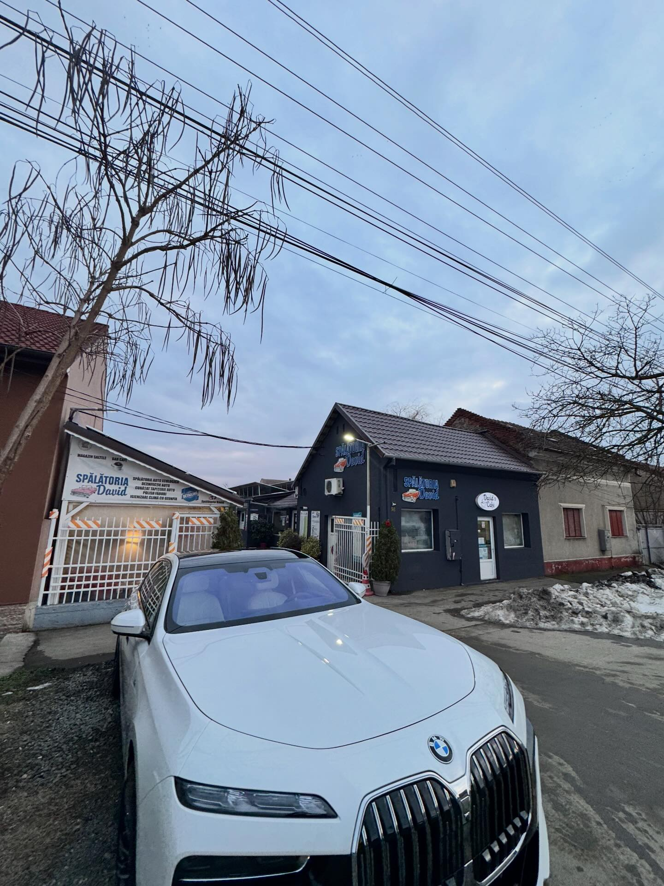
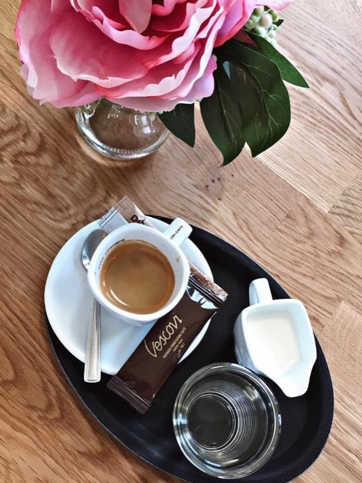
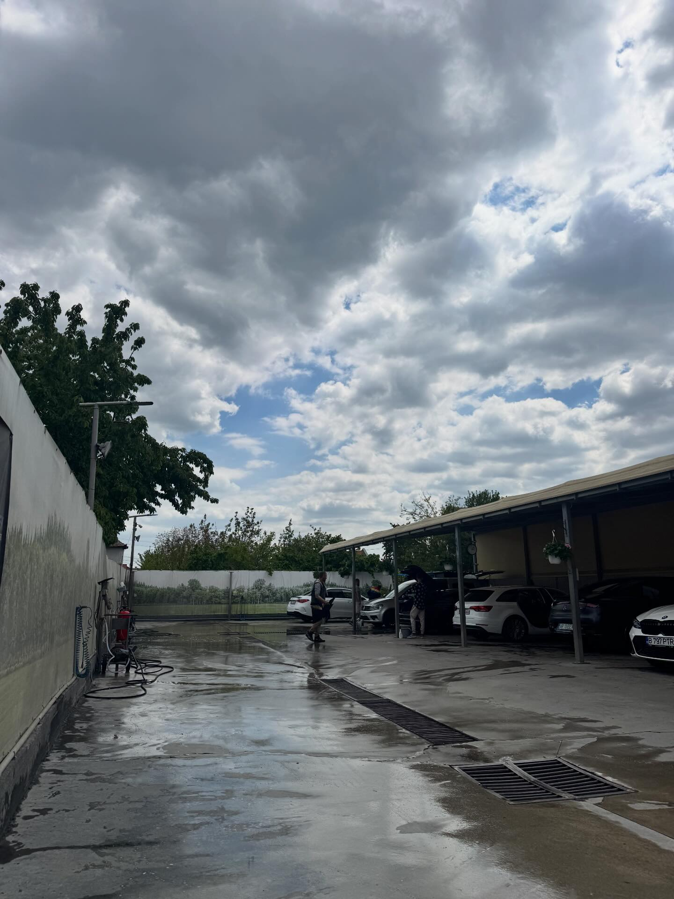
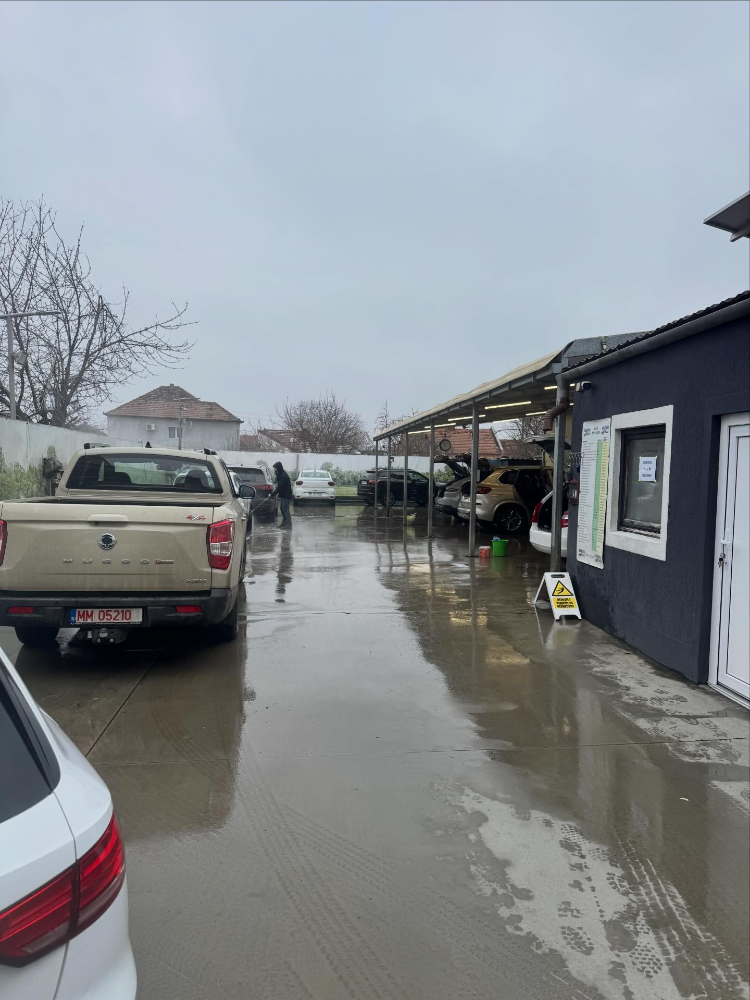
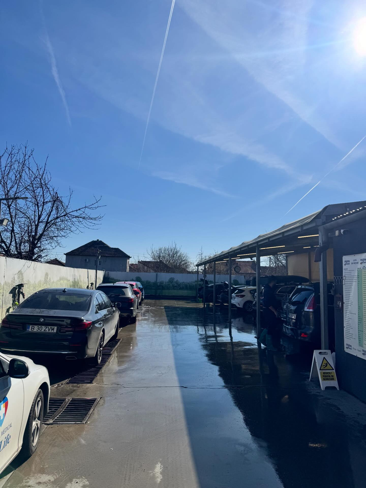
De ce David
„Peste 1.880 de aprecieri pe Facebook și clienți care revin de ani buni. Reputația s-a construit spălare cu spălare.”
— Comunitatea Spălătoriei David
„Lucrăm pe orice vreme, sub copertine acoperite. Ploaie sau soare, mașina ta e la adăpost cât o spălăm.”
— Copertine acoperite
„Spălătorie și bar. Îți pregătim mașina, tu stai la o cafea. Timpul tău nu se irosește.”
— Auto & Bar
Ne găsești și pe Facebook · Arad, cartierul Grădiște
Program & Locație
| Luni – Vineri | 08:00 – 18:00 |
|---|---|
| Sâmbătă | 08:00 – 16:00 |
| Duminică | Închis |